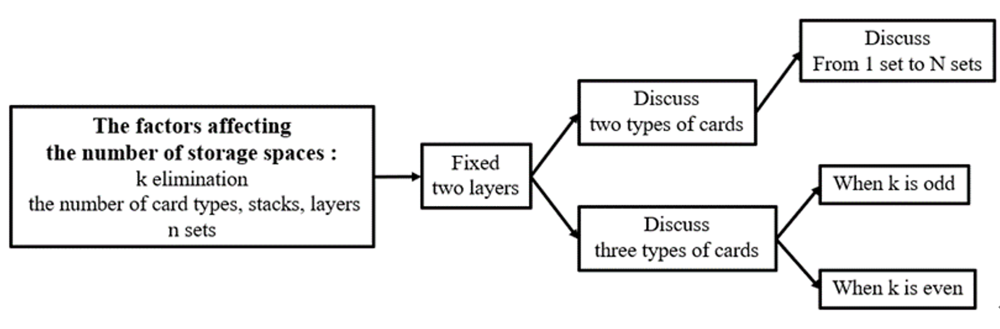

Elimination Game-Discuss the Minimum of Must-pass Storage Spaces
梁巧意、許瑋蘋
Abstract
We were inspired by the game “Sheep n Sheep”. In the first round, we find that we can pass the game on any occasion due to Pigeonhole principle. That is, we can eliminate all the cards in any order of the cards we click on. There is only one card in one storage space.
We simplify the problem and figure it out by using Pigeonhole principle and finding the cycles. Eventually, we find the general formula of the minimum of must-pass storage spaces in the case of k elimination, two or three types of cards, n sets in every type of cards, and two layers.
Research Purpose
Figure out the minimum of must-pass storage spaces in the case of k elimination, two or three types of cards, n sets in every type of cards, and two layers.
Methodology
Conclusions and Future Work
We figure out the minimum of must-pass storage spaces in the case of k elimination, two or three types of cards, n sets in every type of cards, and two layers, except in the case of k elimination when k is greater or equal to 6, three types of cards, and n sets when n is odd in every type of cards.
We only discuss the case of two layers, two or three types of cards. We expect that we can extend card types to positive integers and layers, and try to find out recurrence relation in the future.